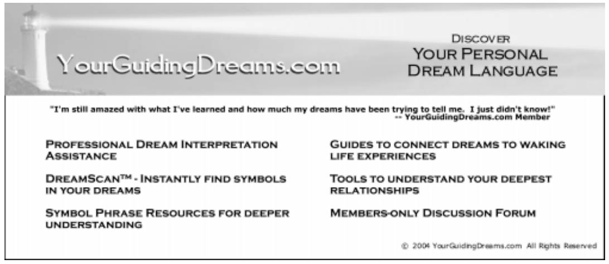

Many of us use dream dictionaries for finding meanings to one-word symbols. One-word symbol meanings can be helpful and fun to use, but there is also danger of taking dream dictionary meanings as absolute. Dream symbol meanings often vary depending on particular situations, and vary greatly from person to person, which is why understanding your own personal meanings for dream symbols is so important to interpreting your own dreams.
An important key in understanding your own dream symbolism and your personal meanings in dreams are what we call “symbol phrases” — learning the meanings of your symbols by examining the context beyond simple one-word objects. To understand the importance of symbol phrases just consider how often we use context in our waking life. Even a simple “Hello” can carry infinite meanings based on the event that precipitates this one-word greeting, the listener’s thoughts and attitudes about the person speaking, and so on. The same is just as true for dreams.
We will tell you more about symbol phrases later, but first a quick background of how we became co-researchers and how Evelyn became so deeply steeped in dreamwork that it led her to the six step Personalized Method for Interpreting Dreams (PMID™) (1) that she teaches and we research today.
A dream about a “quiet Black man with an unshaven beard” led Evelyn to inquire of Bruce Bynum’s interest in helping research the PMID™ dream interpretation method. Dr. Bynum said yes. We now conduct ongoing projects with students; so you see our research is not limited to the experimental lab. Dreams accommodate to essentially any theory (2) and the PMID ™ dream interpretation method accommodates to essentially any type learning – especially self-facilitation.
Evelyn’s dream about a “many colored ‘dream’ cloth” over her shoulders (prompted by her husband’s question “Wonder if Ev’s dreams could be helpful to her”), gave her confidence to begin intense work with her dreams. In the process, Evelyn developed the PMID™ dream interpretation method. Although she was a highly rated accounting professor at the time, she followed her heart (and her dreams) into earning a counselor education masters degree to support her credibility for teaching dreamwork. Today teaching others how to interpret their own dreams is the “ loveliest and most fulfilling work I have done.”
Now back to explaining what symbol phrases are and how they greatly accelerate your understanding of your dream symbols.
Awakening Personal Meanings with Symbol Phrases
We have found the dreamer’s ability to bridge the gap from defining one-word symbols to defining the phrase that contains the symbol is very often a major key to capturing the “unique-to- theindividual meanings.” An example of a one-word symbol is door. One universal meaning of the word, door, is “opportunity.” An example of a symbol phrase is “I lock the car doors,” which one dreamer understood to mean, “I think I have to protect myself from danger without my husband with me ‘on the road of life.’” Another dreamer understood “I closed the door” to mean he had overcome a difficult relationship issue that was represented in his dream.
The phrase that contains the symbol helps the dreamer connect definitions to the context of the dream, the context being pre- dream events, pre-dream thoughts and experiences with people, places and objects. Selecting key symbol phrases is a judgment evaluation by the dreamer as to which dream phrases are the most personally meaningful. Dreamers’ spontaneous feelings are the best gages for knowing the relative accuracy of meanings she or he has developed.
Next are examples of symbol phrases that dreamers selected from their dreams. For purposes of these examples, we added words to the definitions to show dreamers’ connections to the context of their dreams.
“Decide to be friendly with person:” Way to overcome trace of stressful emotions about the person in this dream is to think friendly thoughts about her. (She was also implicated in a dream that I revisited last night.)
“Did not spend time with my friend Sara Emerson:” Reprimands me for skipping meditation yesterday after I decided my uninterrupted work was more important. Sara’s last name “Emerson” reflects my appreciation for Ralph Waldo Emerson’s philosophy to think from the highest perspective, something meditation helps me do.
“Does not want to hear what I have to say:” Be cautious about reminiscing in remorseful ways. In the dream, a childhood friend thinks I am going to talk about activities that she might have been involved in. Last night I almost went into talking remorsefully about this friend.
“Finally tell Joleatha that I need to bring my spouse home:” Successful overcoming of unfounded worry thoughts about whether my spouse was upset by my actions early this morning. Joleatha tends toward gross overreaction.
“Healthy mom urges me to dress well:” After working through mothering issues, get on with wearing those personality characteristics.
“House being cold:” The sadness and heaviness that was felt throughout our house when we argued last night.
“I missed our very fine little girl friendship:” These words that I say to a childhood friend in the dream lets me know the true way I felt when my very fine childhood friend began preferring other friends. Last night I thought about the friendship but decided not to talk remorsefully about it.
“Lack of food:” Lack of food seemed to me to be saying I’m not getting enough emotional nourishment. All there was, was booze. I’m wondering where’s the meat (the substance). This ties to my last night’s worry thoughts about Victor’s alcohol consumption.
YourGuidingDreams.com offers our DreamScan™ (latest technology to instantly finding meanings to one-word symbols), for use as “thought-starters.’ DreamScan™, free to visitors on the site, is fun to use, and many of those meanings reflect the context of the dream.. HOWEVER, the best way to find “unique-to-the-individual” meanings is to go beyond one-word symbols to defining symbol phrases. YourGuidingDreams.com gives instructions to members for defining symbol phrases. The Dreamwork Systems Perspective PMID™ step 6 uses a dreamwork systems approach to understanding dreams about relationships. A dreamwork systems approach is mindful of family systemic models, except, instead of the family or other major relationships coming together in personal counseling sessions, an individual studies series of dreams about various major relationships, primarily the family. (See the PMID™ steps in the box).

Personalized Method for Interpretation Dreams (PMID™) Steps
Step 1: Connect your dream contents to current events and circumstances (most often, same day) to determine the context or theme of your dream.
Step 2: Connect your pre-dream thoughts (most often, same day) to your dream contents by treating the dream as a responsive answer to your pre-dream thoughts.
Step 3: Develop your personal experienced-based definitions of dream symbol/symbol phrase meanings (or associations about) each dream character, place, object or circumstance.
Step 4: Explore the emotions you felt during your dream. Compare to your waking emotions. Also, periodically compare to previous dreams for changes in emotions over time about a relationship or issue being studied.
Step 5: Explore dream for possible suggestions of how to change thoughts, attitudes or behavior leading to understanding and reduction of key issues.
Step 6: Who is the primary relationship in this dream? Comment on your dreaming reactions to/ relationship with any person(s) in this dream. Also, comment on whether this dream reflects current effects from past or recent experiences with another or others. If so, compare how you related/reacted in the past with your current reactions in similar circumstances.
To demonstrate the dreamwork systems perspective, we present a synopsis of Katharine’s series of dreams. After each of the first four dreams and interpretations, Evelyn gave feedback (through the instructor-facilitated university course) on Katharine’s PMID method use. Katharine interpreted her remaining dreams without facilitation.
To set the background for the primary relationship issues Katharine faced, we take a couple sentences from Katharine’s first dreamwork. “I have recurrent emotions of guilt and responsibility. I often feel like I need to keep everyone happy and not cause conflict, and that I must take on other people’s views on certain things.” Then, well into her work with dreams, Katharine wrote, “A common thread (in my dreams) seems to be that I am not responsible for other people’s feelings and I cannot carry that burden of feeling like I need to make people feel a certain way.” Dream series follows:
Dream One: “Family Crash.”
Katharine is driving, the whole family is in the car, she loses control and the car crashes. The night before the dream, Katherine felt guilty for letting her family down because she could not go with them to a football game.
Dream Two: “Victorian Mansion.”
“Victorian vs. present day,” could symbolize being out of place… me caretaking my mom… which is out of place.” On one floor are children who “died at about age four.” “I can remember at a very young age, about four, being left at daycare, and being so upset that my mom was leaving, and wanting to cry, but not letting myself, because I knew that would make it hard for her to leave.” The night before this dream, Katharine worried about her mom’s “too quiet” attitude.
Dream Three: “Blocked Path.”
Katharine is the only family member brave enough to leave the house to make a delivery to a neighbor.. Dead animals in her path (“possibly any negative emotions/ situations my family is unwilling to deal with”) prevent her from getting back to the family. The family watches with “we told you so” looks on their faces. “I feel guilty… and very alone… and scared.”
Dream Four: “Bullets.”
A roommate is shot. Katharine tries to stop the bleeding. The night before the dream, Katherine tried to stand up for a roommate who did not defend herself.
Dream Five: “Going Back to High School”
A breakthrough dream. Katharine gathers courage to give a dead cat back to a high school boyfriend after he leaves the dead cat in her locker. “As I walk back down the hall, I feel very relieved and freed.” The night before the dream the friend, now several years past high school, “pouted” when she declined a date with him, as he did during high school days. “I need to put Marshall’s childish behavior back on him and… refuse to carry around that worry.”
Dream Six: “Painting in the Basement”
-came one night after Katharine, for the first time, told a long-time friend, Paige, that she disapproved of Paige’s treatment of a young man. In the dream, Katharine invites Paige to “paint in the basement.” Paige resists. “Me eventually going back upstairs:” “Represents me (Katharine) realizing I can’t force Paige to look deeper into herself….”
Dream Seven: “Nobody Believes Me”
(a dream she had before the course, but was “too freaked out” to work with it, came again during the course). Katharine first watches a sister bury a dead person in the back yard. Finally, Katharine comes out from “ Hiding behind a bush: My own fear of not knowing how to confront my sister” and “Stands next to my sister: This represents me confronting my sister, but also supporting her with this problem.” Before the dream, Katharine asked her parents to talk with this daughter about a disorder that seemed quite plain to Katharine. “They didn’t believe me.” (They don’t believe her in the dream either.)
(Dreamer’s Summary): “Common with other dreams is the focus on me expressing myself more even if it is scary because I am not used to it. In “Family Crash,” I am in the driver’s seat, and in the “Blocked Path” dream, I am the one to be brave, and in “Nobody Believes Me,” I am the one to take charge and go stand by my sister. This message is very clear to me that I have the power to change things that I don’t like, even if I may not necessarily change how others respond. I can change my own actions, which does affect the system.”
A major aim for the PMID™ method is to help people in the current generation make healthful differences in their own lives, thus terminating potential unhealthful patterns. For several years, coauthor E. Bruce Bynum has suggested a “personalized” view of an extended familial system. In his explorations of dreams with individuals and with families in therapy, he has found people in close association, such as the family, resonate with each other in such a way that dreams of each family member express the family’s emotional situations. This shared matrix that exists within and between us, interlaces us all in an enfolding field, in a Family Unconscious. Though dreams of each family member reflect the family constellation, individual’s dreams differ, depending on the individual’s particular skew or perception of the family constellation and conflicts (4, 5).
Though we concentrate on relationship dreams, the PMID™ Method is equally useful for “everyday” guidance in common activities, such as home, work, recreation, career, education, and health. Simply eliminate PMID™ Step 6. Examples of what we call everyday dreams are the two dreams published by Dream Network (6).
How to Become Involved in Understanding Your Dreams with the PMID™ Method
Would you like to use the Personalized Method for Interpreting Dreams (PMID™) as you record your dreams in your personal dream journal? If yes, use the six steps shown earlier in this article.
Or, would you like to use one of www.YourGuidingDreams.com options to help you work with the PMID™ dream interpretation method? If yes, go to www.YourGuidingDreams.com to select from these two options.
Both options are very user friendly:
- Public Membership. Dreamer Self-faciltated, the public option is not an education credit course. Applicants enter and leave when they wish. Some functions for Public Membership are:
- Record and interpret your dreams using the computer-guided steps of the PMID™ dream interpretation method.
- Participate in discussions on a discussion board.
- Dream files by date, title, and relationship, automatically created.
- Your symbol/symbol phrase definitions automatically compiled in your personal directory.
- University Level Courses - Instructor facilitated through the University of Wisconsin Whitewater, available at graduate and undergraduate levels to counselor education, social work, psychology, and sociology majors or graduates. Out of state Tuition rates apply to all states except Wisconsin and states with reciprocity agreements.
To sign-up for either option, click on Sign-up from the home page of www.yourguidingdreams.com.
Dreams are “personal.” Your dreams are personal. All member dreams and interpretations are kept confidential and are available for viewing only by the individual dreamer member and select members of YourGuidingDreams staff.
Whether you use the website, or record your dreams in a journal, the PMID™ dream interpretation method could benefit you. Think about it. You likely already sense that many of your pre- dream events and thoughts connect to your dreams. You possibly have heard about comparing dreaming emotions and waking emotions, and that dreams contain solutions. The PMID™ dream interpretation method does all those and more—from inviting you to define dream symbol phrases based on personal experiences, to inviting you to explore whether stressful reactions to others stem from your reactions in prior experiences. ℘
References:
(1) Duesbury, E. (2000). Utilizing Dreams from a Systemic Perspective to Understand and Mollify Relationship Issues, University of Wisconsin-Whitewater
(2) Duesbury, E. (2001). Personalized Method for Interpreting Dreams (PMID) – As Applied to Relationship Issues. Dreaming: Journal of the Association for the Study of Dreams, 11(4), 203- 216.
(3) Mahrer, A. R. (1989). Dreamwork in Psychotherapy and Self- Change
(4) Bynum, E. B. (1993/2003). Families and the Interpretation of Dreams: Awakening the Intimate Web. NY: Paraview Books.
(5) Bynum, E. B. (1984). The Family Unconscious. Wheaton, IL: The Theosophical Publishing House.
(6) Duesbury, E. Dream Network. Vol. 13, 2 Professor Uses Dreams as Guides in Working with Students